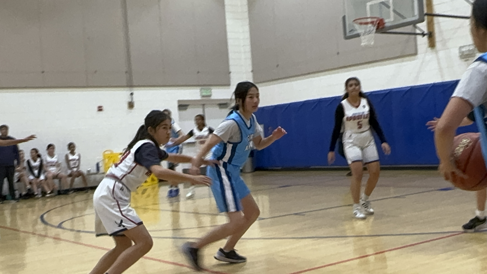

Sunny GaoAn diligent student, a passionate musician, an enthusiastic athlete, a creative artist, and a dedicated community volunteer,please click each picture to learn more about me.
I'm a 8th grade student. I like Math, Science, Social Study and Reading.
I like playing violin, Guzheng, basketball, drawing, singing, dance and musical.
Violin Performance
Date:
Oct 2022
Fisherman's English Song (渔舟唱晚) This song is since 1930s, the most influential piece spread in China. The music depicts the beautiful scene of the sunset reflecting on vast expanses of blue waves, with fishermen leisurely enjoying themselves and fishing boats gradually drifting away with the tide. This ensemble played by Sunny and her sister Annie. They won the second plance of American Protege International Music Talent Competition Fall 2022 and performed in Carneige Hall summer 2023.
Date:
Nov 2022
Fisherman's English Song Sunny and Annie Performed this song in the MTAC Palo Alto Branch Autumn Festival and got excellent score from the judges.
Date:
Nov 2023
The violin concerto No.4 in G Major Sunny performed this piece for MTAC Palo Alto Branch Autumn Festival and got excellent score from the judges.
Date:
May 2023
Concerto No.1 in A Minor Sunny performed this piece for MTAC Palo Alto Branch Student Recital.
Date:
Oct 2023
Beethoven Virus Sunny performed this piece with her classmates Bryan, Liam, Ted in the Variety show and in two nuring home.
Date:
Apr 2022
Concerto in G Major, Op. 24, 1st Movement Sunny auditioned for Camilla Kolchinsky Orchestra in GSYO.
Date:
Apr 2021
Sonata No.4 in D Major, HWV 371 Allegro Sunny auditioned for California Youth Symphony.
Date:
2020-2021
Concerto for Two Violins in D minor Sunny's recording for fun during covid.
Date:
Feb 2018
Ode to Joy Sunny's first ensemble.
Date:
Feb 2018
Theme from Witches' Dance Sunny auditioned for ensemble.
Date:
Jun 2017
Gossec Gavotte Sunny's second voilin performance.
Guzheng Performance
The Guzheng is a Chinese zither with 2500 years of history. Sunny started to learn Guzheng in since August 2022.
Date:
June 2023
The Fight with the Typhoon (战台风) is a famous Guzheng solo piece, a dramatic depiction of fight of the Shanghai harbour proletariat against the forces of nature, while protecting the property of the people. Sunny performed it in the TCAAT Music Talent competition and won the 4th place.
Date:
Dec 2023
Along the Yili River (伊犁河畔) Sunny performed this piece in the level 7/10 test and got the excellent pass.
Date:
Dec 2023
Harvest Drum (丰收锣鼓) Sunny performed this piece in the level 7/10 test and got the excellent pass.
Date:
Feb 2023
Wild Geese Descending on the Sandbank (平沙落雁) / Song of Siton (丝桐颂) Busy Weaving (纺织忙) Sunny performed in the level 4/10 test and got the excellent pass.
Date:
May 2023
Harvest Drum (丰收锣鼓) Sunny (back row right 3) collaborated with her Guzheng instructor and fellow team members for a Mother's Day performance.
xxWild Geese Descending on the Sandbank (平沙落雁) / Song of Siton (丝桐颂) Busy Weaving (纺织忙) Sunny performed in the level 4/10 test and got the excellent pass.
Dance Performance
Date:
Dec 2023
Loco by Itzy Sunny is centrally positioned in the thumbnail.
Date:
Dec 2023
La Vie en Rose Sunny is centrally positioned in the thumbnail.
Date:
Oct 2023
GRL GVNG by XG Sunny is positioned on the left side in the thumbnail.
Date:
Aug 2023
Fearless by LE SSERAFIM Sunny is positioned on the right side in the thumbnail.
Date:
June 2023
Sunny is positioned on the left side in the thumbnail.
Date:
June 2023
Wanna Be by Itzy Sunny is positioned on the left in the thumbnail.
Date:
Apr 2019
Song name Sunny's first hiphop dance show, she is positioned as the third figure from the right in the thumbnail.
Date:
Jun 2019
Little Cavalry (小骑兵) Sunny made her debut dance performance at Lujianping Dance & Arts, where she portrayed the character of Little Cavalry.
Date:
Feb 2017
Song name Sunny's first Chinese dance, she is at front position in the thumbnail.
Sports Pictures

7th Grade Basketball team
Sunny is positioned at the leftmost spot in the second row in the picture.
7th Grade Volleyball team
Sunny is positioned at the rightmost spot in the back row in the picture.
6th Grade Volleyball team
Sunny is positioned at the rightmost spot in the back row in the picture.
Sports Pictures
7th Grade Basketball team
Sunny is positioned at the leftmost spot in the second row in the picture.
6th Grade Basketball team
Sunny is positioned at the second right spot in the picture.
7th Grade Volleyball team
Sunny is positioned at the rightmost spot in the back row in the picture.
6th Grade Volleyball team
Sunny is positioned at the rightmost spot in the back row in the picture.
Sunny's Recent Drawings
Sunny's Digial Painting from 2019-2020
Volunteer Experiences
Date:
Nov 2023
Aegis Gardens and Fremont Hills Seinor Home
Sunny showcased her violin skills and played in an ensemble with her friends, creating a delightful afternoon for the seniors.
Date:
Oct 2023
Silicon Valley Tsinghua Alumni Association 2023 Annual Gathering
Sunny took charge of leading children in a variety of enjoyable math related activities.
Date:
Apr 2023
Cupertino Toyokawa at the Cherry Blossom Festival
Sunny's first shot at putting together some cool math activities for the kids during the festival.
Date:
2017-2019
Cupertino Senior Centers
Sunny served as both the MC and performer during each visit, making it a truly enjoyable experience for her.